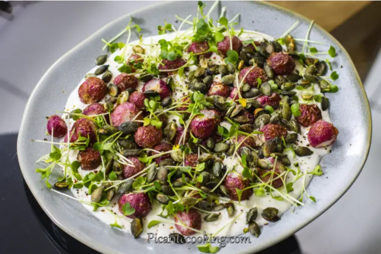
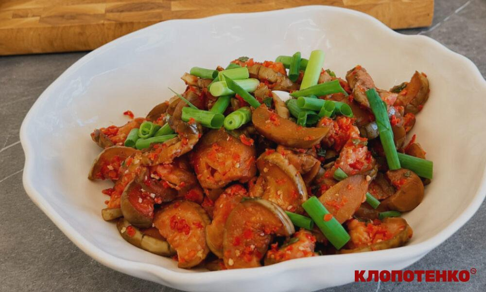
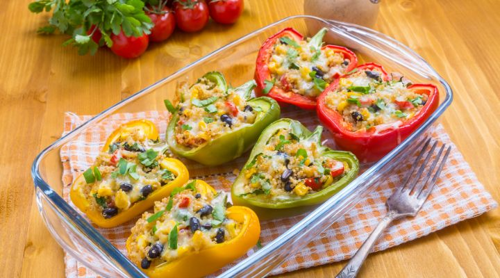
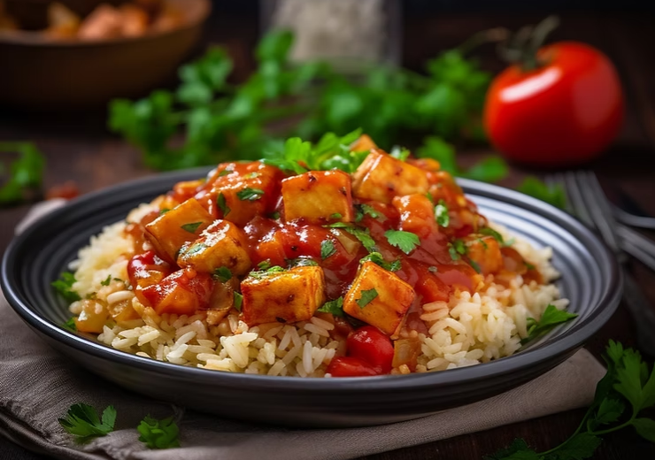
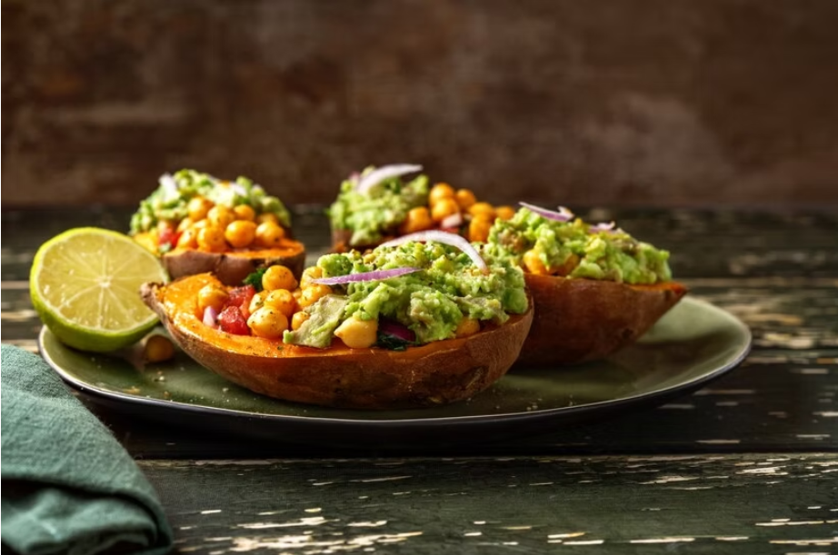
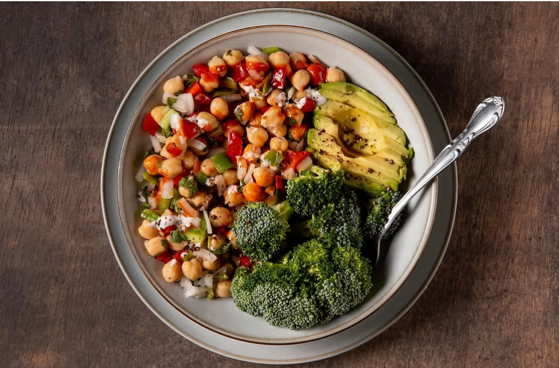
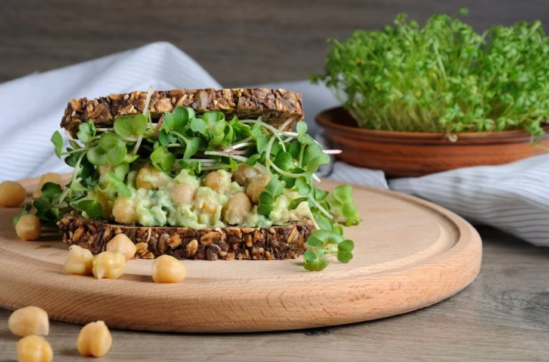
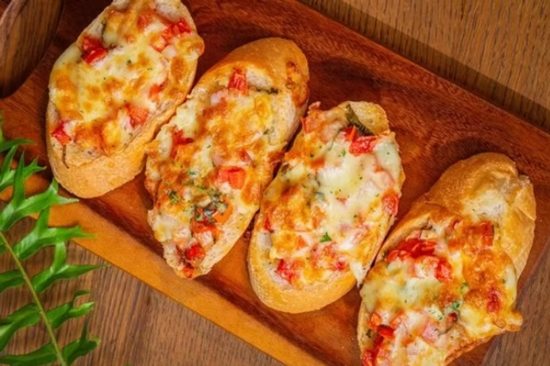

Історія згенерованих рецептів
Згенеровано за сеанс: 0

Кімчі з баклажанів по-корейськи

Фарширований сиром перець

Овочі з рисом та тофу в кисло-солодкому соусі

Фарширований батат з квасолею зі сметаною та гуакамоле

Веганський боул з нутом та овочами

Бутерброди з нутом та «тунцем»
